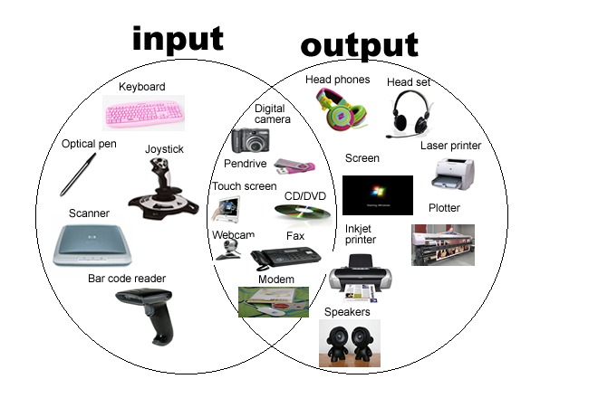

I/O devices can be roughly divided into two categories: block devices and character devices.
It stores information in fixed-size blocks, each one with its own address. Common block sizes range from 512 to 65,536 bytes.
Examples are Hard disks, Blu-ray discs, and USB sticks are common block devices.
It delivers or accepts a stream of characters, without regard to any block structure. Not addressable and does not have any seek operation.
Examples are Printers, network interfaces, mice, and most other devices that are not disk-like can be seen as character devices.
The electronic component of I/O units is called the device controller or adapter. Operating System takes help from device drivers to handle all I/O devices. There is always a device controller and a device driver for each device to communicate with the Operating Systems. A device controller may be able to handle multiple devices. As an interface its main task is to convert serial bit stream to block of bytes, perform error correction as necessary.
Older Version of Monitors that were bulky, power hungry and fragile!! CRT monitors fire a beam of electrons onto a fluorescent screen. Using magnetic fields, the system is able to bend the beam and draw pixels on the screen.
This works as a bit serial device at low level. It reads bytes containing the characters to be displayed from memory and generates the signals to modify the polarization of the backlight for the corresponding pixels in order to write them on screen.
CPU interaction with the control registers and device data buffers either through dedicated port allocation or using device memory to map them all. In memory-mapped I/O, same address space is shared by memory and I/O devices. The device is connected directly to certain main memory locations so that I/O device can transfer block of data to/from memory without going through CPU.

To reduce the overhead of Interrupts, DMA hardware bypasses CPU to transfer data directly between I/O device and memory. DMA module itself controls exchange of data between main memory and the I/O device. CPU is only involved at the beginning and end of the transfer and interrupted only after entire block has been transferred.
DMA controller (DMAC) manages the data transfers and arbitrates access to the system bus. It contains several registers that can be written and read by the CPU. These include a memory address register, a byte count register, and one or more control registers.